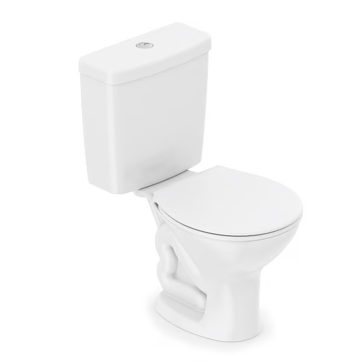

Kit vaso sanitário com caixa acoplada e assento branco duplo acionamento 3/6L com saída vertical - Celite
Preço: R$599,90/cada
Descrição detalhada
| Produto | Kit vaso sanitário com caixa acoplada e assento |
|---|---|
| Modelo | Saveiro |
| Marca | Celite |
| Sáida do vaso | Vertical |
| Formato | Oval |
| Cor | Branco |
| Tipo de acionamento da bacia sanitária | Duplo acionamento |
| Posição do acionamento da bacia sanitária | Botão superior |
| Capacidade do acionamento da bacia sanitária | 3/6 L |
| Altura | 76,00 cm |
| Largura | 40,00 cm |
| Profundidade | 62,00 cm |
| Acompanha assento sanitário | Sim |
| Acompanha fixação | Sim |
| Conteúdo da embalagem | Vaso sanitário + Caixa acoplada + Kit de instalação (Flexível e anel de vedação) + Assento sanitário + Manual |
| Garantia do fabricante | 120 meses |